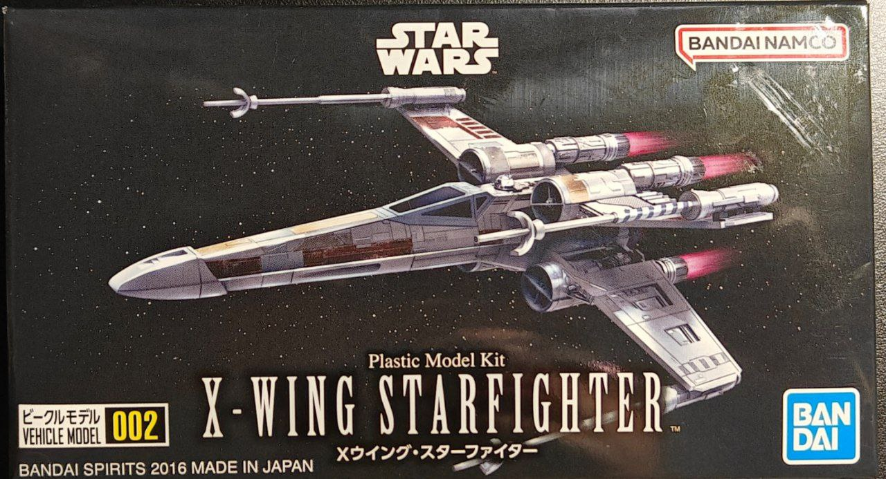
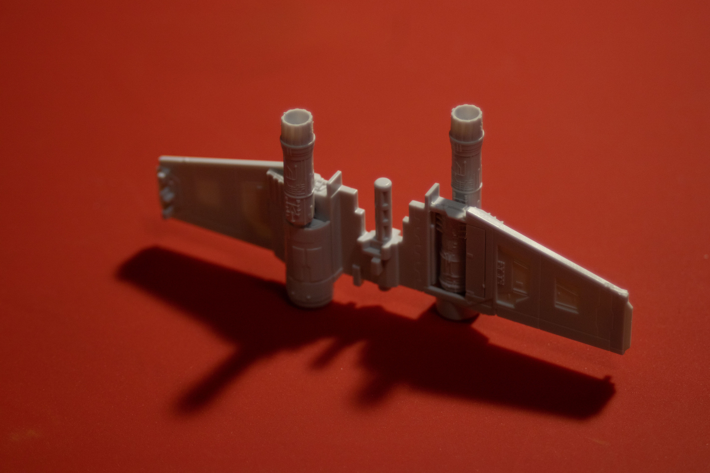
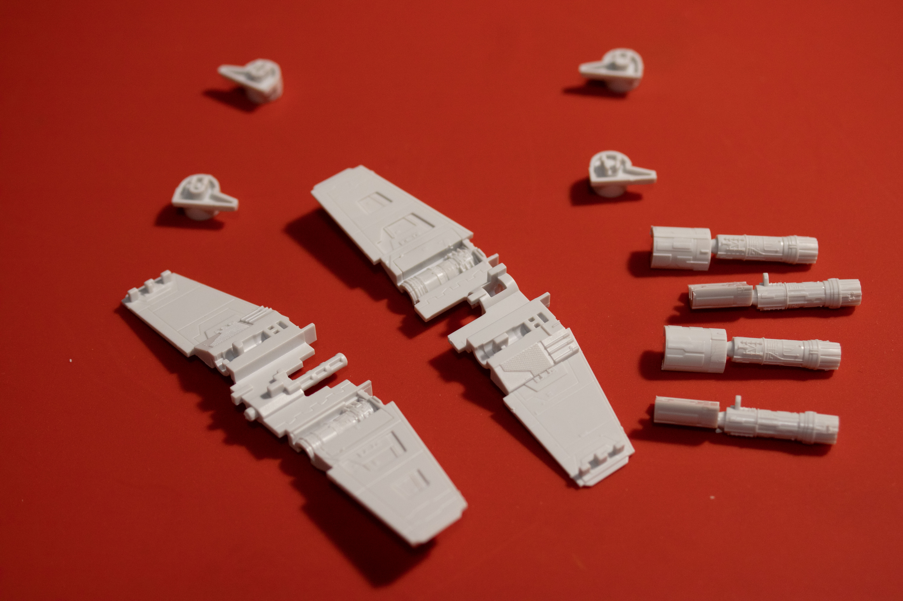
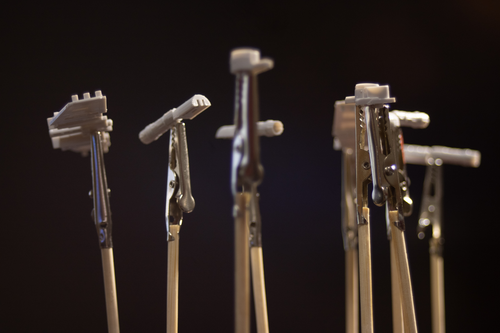
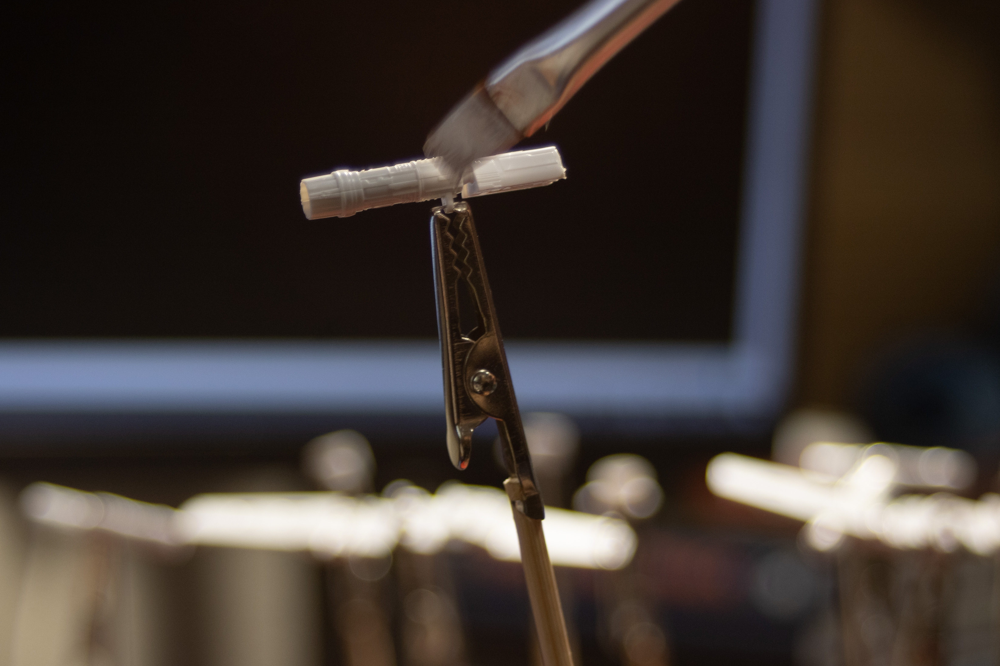
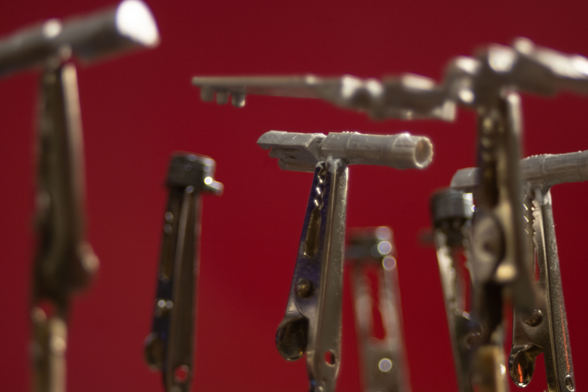
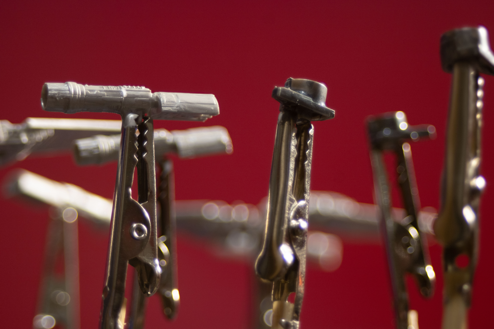
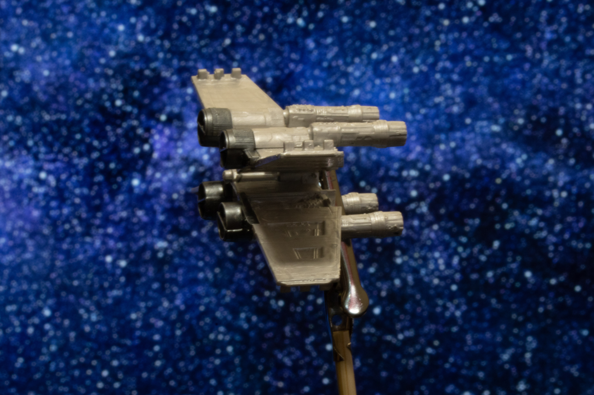

July 18th, 2024
This model needs no introduction. This is a scale model of the X-Wing Starfighter from Star Wars. Although the box makes no mention of it, this model seems to be a 1/144 scale model.
To build the wings, we actually build two very similar bodies which, once connected to each other, make the "X" wings. Here's the first of the two: 
I decided to disassemble:
To have an easier time paiting them:
A first coat of primer (Vallejo Surface Primer 70.600 White)
Once dry, I painted most of the parts with AK11209 Silver paint:
With the exhausts painted with AK11212 Gun Metal:
After the coat of primer and two thin coats of paint, this is what the wings look like once assembled:
